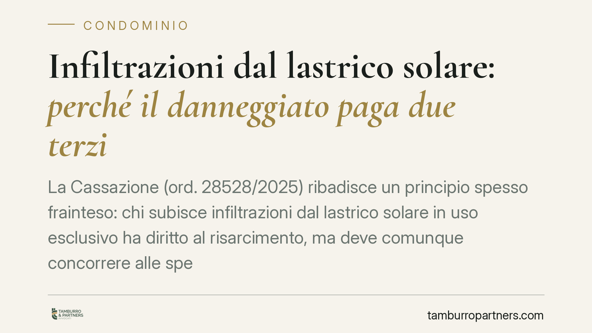

Infiltrazioni dal lastrico solare: perché il danneggiato paga due terzi
La Cassazione (ord. 28528/2025) ribadisce un principio spesso frainteso: chi subisce infiltrazioni dal lastrico solare in uso esclusivo ha diritto al risarcimento, ma deve comunque concorrere alle spese per due terzi ai sensi dell'art. 1126 c.c. Il motivo è tecnico-giuridico: il lastrico copre anche il suo immobile. Un tema che tocca quasi ogni condominio con ultimi piani.

Il caso e la decisione
Un condomino lamenta danni da infiltrazioni provenienti dal lastrico solare sovrastante, oggetto di uso esclusivo di un altro proprietario. Chiede il risarcimento integrale. La Corte di Cassazione, con l'ordinanza n. 28528/2025, conferma che il diritto al risarcimento sussiste, ma la ripartizione delle spese non è a totale carico di chi ha l'uso esclusivo del lastrico.
Il punto centrale è che il lastrico solare, anche quando è in uso esclusivo, svolge una funzione di copertura dell'edificio. Serve cioè a proteggere i piani sottostanti. Da qui la ripartizione delineata dall'art. 1126 c.c.
Inquadramento normativo
L'art. 1126 c.c. regola proprio le spese di riparazione e ricostruzione del lastrico solare di uso esclusivo. Stabilisce che chi ne ha l'uso esclusivo sostiene un terzo della spesa; i restanti due terzi gravano sui proprietari dei piani (o porzioni di piano) ai quali il lastrico fa da copertura, in proporzione al valore delle rispettive unità.
La logica è semplice: il lastrico protegge gli immobili sottostanti, quindi i proprietari di questi ultimi beneficiano della sua funzione di copertura e ne condividono gli oneri. Il danneggiato, essendo proprietario di un'unità coperta dal lastrico, rientra tra i soggetti chiamati a contribuire per i due terzi.
Questo criterio di ripartizione delle spese viene esteso dalla giurisprudenza anche alla distribuzione del danno da infiltrazioni, quando questo deriva da difetti di manutenzione o costruzione del lastrico e non da una condotta specifica del proprietario. In tal caso trova applicazione la responsabilità da cosa in custodia dell'art. 2051 c.c., con custodia ripartita tra chi usa il lastrico e il condominio.
Diverso è lo scenario in cui le infiltrazioni dipendono da un comportamento colposo del proprietario del lastrico, ad esempio opere abusive o incuria qualificata. Qui può configurarsi la responsabilità esclusiva ex art. 2043 c.c., con addebito integrale al responsabile.
Implicazioni pratiche
Per il condomino dell'ultimo piano la conseguenza è concreta: il risarcimento ottenuto non coprirà l'intero danno subìto. Dalla somma andrà decurtata la quota di due terzi che grava su di lui in quanto proprietario dell'immobile coperto dal lastrico.
Per il proprietario del lastrico in uso esclusivo, invece, la responsabilità non è automaticamente totale. Risponde per la quota di un terzo nelle ipotesi ordinarie di deterioramento della copertura, salvo che il danno sia riconducibile a una sua condotta specifica.
Il condominio resta coinvolto quando il lastrico, pur in uso esclusivo, mantiene la funzione comune di copertura: la gestione della manutenzione e la custodia sono condivise.
La partita, dunque, si gioca sulla causa dell'infiltrazione. Distinguere tra vizio della copertura e condotta colposa del singolo cambia radicalmente la ripartizione del danno.
Cosa fare in concreto
- Documentate subito l'origine del danno. Fotografate le infiltrazioni e richiedete una perizia tecnica che individui la causa: difetto della copertura o condotta del proprietario del lastrico.
- Verificate la natura del lastrico. Accertate se è in uso esclusivo, condominiale o di proprietà esclusiva: la qualificazione incide sul criterio di ripartizione.
- Attivate la responsabilità esclusiva solo con prova adeguata. Se sostenete che il danno derivi da una condotta colposa (opere abusive, incuria), raccogliete elementi concreti prima di invocare l'art. 2043 c.c.
- Coinvolgete l'amministratore. Segnalate formalmente la situazione per gli interventi di manutenzione sulla copertura comune e per la convocazione dell'assemblea.
- Valutate la copertura assicurativa. Controllate la polizza globale fabbricati del condominio e le eventuali polizze individuali prima di avviare un contenzioso.
Conclusioni
L'ordinanza conferma un orientamento consolidato ma controintuitivo per molti proprietari: il danneggiato dal lastrico non è un soggetto estraneo alla spesa, perché beneficia della funzione di copertura dello stesso. Consigliamo di impostare ogni richiesta risarcitoria partendo dall'accertamento tecnico della causa, perché è da lì che discende l'intera ripartizione degli oneri.
---
*Contributo informativo a cura di Tamburro & Partners - Avv. Giuseppe Tamburro. Non costituisce parere legale.*
Ogni condominio ha una storia a sé.
Se gestisci un'amministrazione e vuoi un confronto su una specifica questione condominiale, scrivi allo studio. Ti rispondiamo entro un giorno lavorativo.